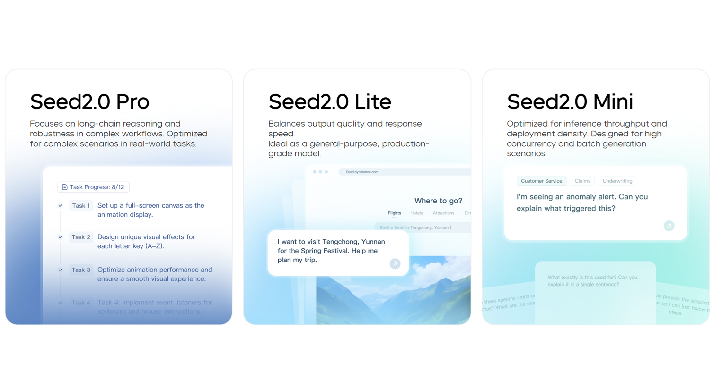
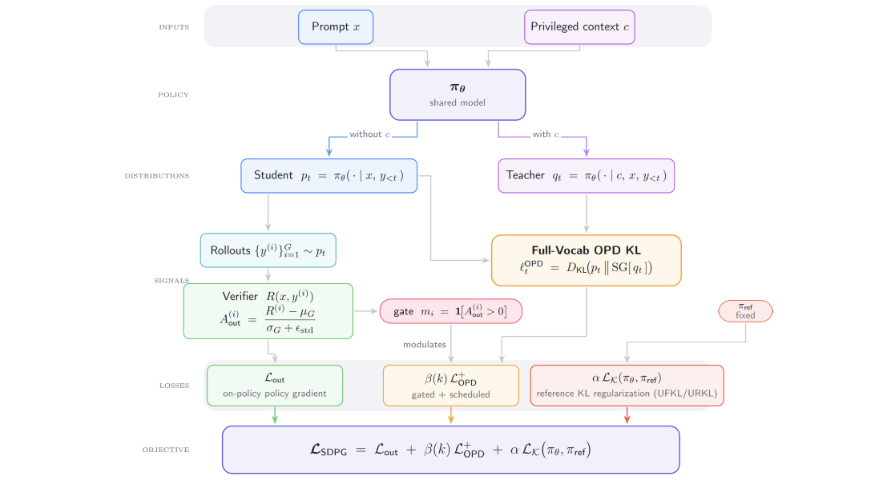

Seed2.0 Model Card: Towards Intelligence Frontier for Real-World Complexity
Seed2.0 Model Card: Towards Intelligence Frontier for Real-World Complexity

Seed2.0 系列模型正式发布， 提供 Pro、Lite、Mini 三款不同尺寸的通用 Agent 模型。
该系列通用模型的多模态理解能力实现全面升级，并强化了 LLM 与 Agent 能力，使模型在真实长链路任务中能够稳定推进。
Seed2.0 还进一步把能力边界从竞赛级推理扩展到研究级任务，在高经济价值与科研价值任务评测中达到业界第一梯队水平。
The Seed2.0 series model has been officially released, offering three general-purpose agent models of varying sizes—Pro, Lite, and Mini.
The general-purpose models in this series deliver a comprehensive upgrade in multimodal understanding, with strengthened LLM and Agent capabilities that enable steady progression in real-world long-horizon tasks.
Seed2.0 further expands its capability frontier from competition-level reasoning to research-grade tasks, achieving first-tier industry performance in evaluations on high economic-value and high scientific-value workloads.
